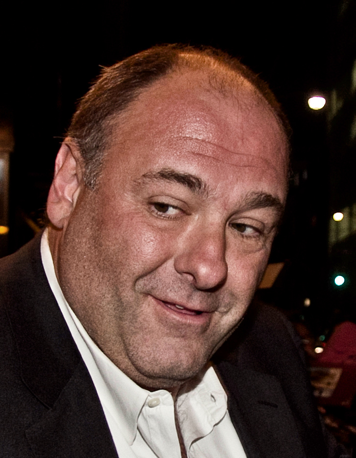
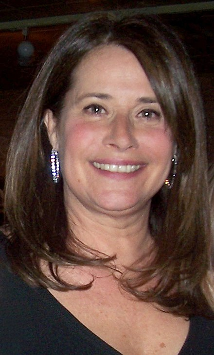
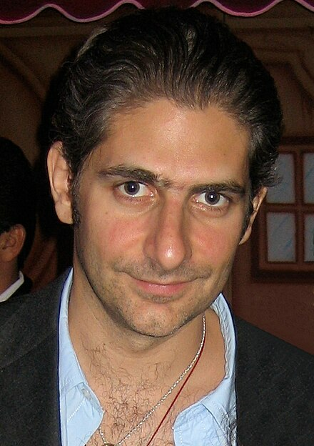

Report on the TV Show The Sopranos

Introduction
The Sopranos is an American crime drama television series created by David Chase. It premiered on the HBO network in 1999 and ran for six seasons until 2007. The show revolves around Tony Soprano, a mob boss in New Jersey, as he navigates the challenges of leading a criminal organization while dealing with personal and family issues.
Plot Summary
The series begins with Tony Soprano seeking therapy for his anxiety attacks while trying to balance his roles as a mob boss, husband, and father. Throughout the series, Tony faces numerous conflicts with rival mobsters, government agencies, and his own family members. The show delves into themes of family dynamics, loyalty, betrayal, and the psychological effects of a life of crime.
Impact and Legacy
The Sopranos remains a cultural phenomenon, remembered for its complex characters, compelling storytelling, and exploration of moral ambiguity. It has left a lasting impact on the television landscape and continues to be discussed and analyzed by fans and scholars alike.
Main actors



Seasons schedue
| Season | Episodes | Date of the first episode | Release date of the last episode |
|---|---|---|---|
| 1 | 13 | January 10, 1999 | April 4, 1999 |
| 2 | 13 | January 16, 2000 | April 9, 2000 |
| 3 | 13 | March 4, 2001 | May 20, 2001 |
| 4 | 13 | September 15, 2002 | December 8, 2002 |
| 5 | 13 | March 7, 2004 | June 6, 2004 |
| 6 | 21 | March 12, 2006 | June 4, 2006 |
Views per episode in Season
python code generated by ChatGPT
Average Views per Season

Dynamic of views from season-to-season
The viewership of “The Sopranos” among the 18-49 demographic varied across its seasons. Season 4 (2002) attracted the highest number of viewers in this demographic, averaging 7.56 million viewers Season 4 See Average Views per Season. Season 3 (2001) also garnered significant attention with an average of 6.04 million viewers Season 3 See Average Views per Season. However, there was a decline in viewership in subsequent seasons, with Season 6B (2007) experiencing the lowest viewership among the 18-49 demographic, averaging only 4.97 million viewers Season 6B See Average Views per Season. Despite fluctuations, the series maintained a relatively strong viewership throughout its run, indicating its enduring popularity.